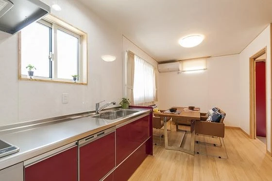
アイノスの建売住宅
こんにちは。富山で自然素材にこだわるホンモノの家、フジ創アイノスです。 ３月２６、２７日に、高岡市内免にあるモデルハウス特別販売会を開催します！ アイノスオリジナル、自然素材の健康住宅で、2LDKタイプのコンパクトな家で
続きを読む →FUJISOU AINOS JOURNAL
家づくりのこと、暮らしのこと。
日々の想いを、お伝えします。
新しい記事から 15・40ページ

こんにちは。富山で自然素材にこだわるホンモノの家、フジ創アイノスです。 ３月２６、２７日に、高岡市内免にあるモデルハウス特別販売会を開催します！ アイノスオリジナル、自然素材の健康住宅で、2LDKタイプのコンパクトな家で
続きを読む →こんにちは。富山で自然素材にこだわるホンモノの家、フジ創アイノスです。 今回は、土地選びに大事な考え方についてお話します。 まず以下の4点を知っていただきたいと思います。 ・土地は日当たりが良さそうなほど、人気があるため
続きを読む →
こんにちは。富山で自然素材にこだわるホンモノの家、フジ創アイノスです。 SNS上で、「家づくりで後悔している点は？」というアンケートがありました。 一番多かったのは、「窓」でした。 「ここに作った窓がいらなかった」、「思
続きを読む →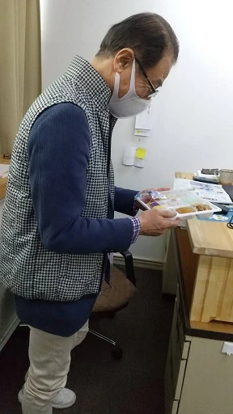
こんにちは。富山で自然素材にこだわるホンモノの家、フジ創アイノスです。 今日は冬に逆戻りしたように寒かったですね。 寒暖差が激しいので体調管理に気をつけてくださいね。 アイノスの荒井社長、健康のためにデスク作業は立ってし
続きを読む →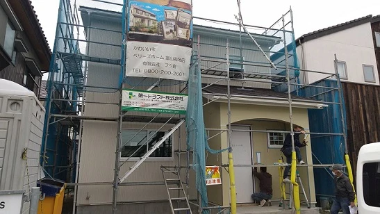
こんにちは。富山で自然素材にこだわるホンモノの家、フジ創アイノスです。 今回は、高岡市で建築中の現場をレポートします。 4月に完成予定の、ご夫婦とお子様二人のご家族４人のお家です。 大工さんによる工事が順調に進められてい
続きを読む →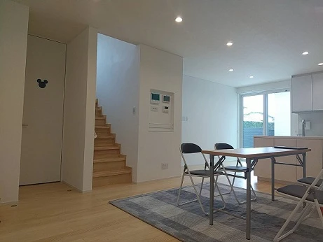
こんにちは。富山で自然素材にこだわるホンモノの家、フジ創アイノスです。 スタッフの仙田です。 今日は、３/19,20,21に開催される完成見学会の会場になるお家を見てきました。 塗り壁の外壁で、すっきりした外観がおしゃれ
続きを読む →こんにちは。富山で自然素材にこだわるホンモノの家、フジ創アイノスです。 今回は、フジ創アイノス代表取締役・荒井一へのインタビュー第2弾です。 フジ創アイノスの強みは何ですか？ 身体にいい自然素材の家を、安く提供できるとこ
続きを読む →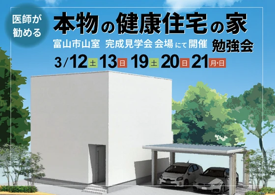
こんにちは。富山で自然素材にこだわるホンモノの家、フジ創アイノスです。 明日から富山市山室で新築完成見学会が開催されます！ お施主様のご厚意でお借りした、限定5日間（完全予約制）の開催です。 お施主様は家づくりを進めるに
続きを読む →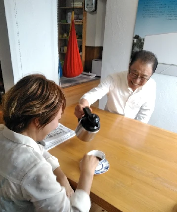
こんにちは。富山で自然素材にこだわるホンモノの家、フジ創アイノスです。 今回はフジ創アイノスの荒井社長に、家づくりへの思いをインタビューしました。 荒井社長 「本当に住み心地の良い家」「長持ちする家」「 家族が幸せを感じ
続きを読む →
こんにちは。富山で自然素材にこだわるホンモノの家、フジ創アイノスです。 もし賃貸に住み続けるとしたら、一生に払う家賃はいくらになるでしょうか。 30歳の人が85歳まで毎月家賃を払うと考えると、残り55年間払い続けなければ
続きを読む →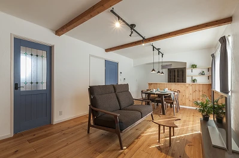
こんにちは。富山で自然素材にこだわるホンモノの家、フジ創アイノスです。 最近花粉が飛び始めたそうで、花粉症の人たちにはつらい季節になってきました。 目のかゆみや鼻水のアレルギー症状がつらいですよね...。 ビフィズス菌な
続きを読む →
こんにちは。富山で自然素材にこだわるホンモノの家、フジ創アイノスです。 昨日は雛祭りでしたね。我が家でも雛人形を飾っていました。 子どもが災いに遭わないように、健やかな成長を祈願する意味があるそうです。 フジ創アイノスは
続きを読む →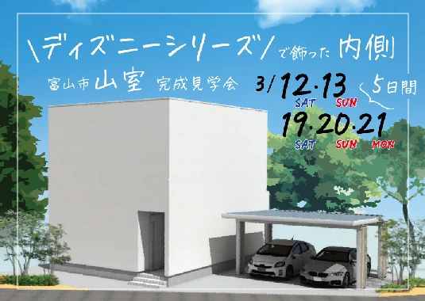
3月12日（土）13日（日）, 19日（土）20日（日）21日（月・祝）の5日間、富山市山室で完成見学会を開催します！ 今回会場となるのは、標準仕様が"フルセット"の住宅に、さらに数々のオプションを追加した特別仕様のお家
続きを読む →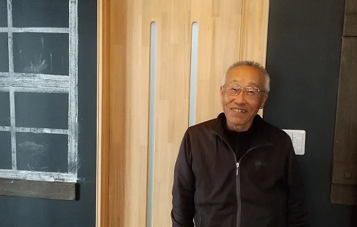
こんにちは。富山で自然素材にこだわるホンモノの家、フジ創アイノスです。 今回はフジ創アイノス、現場管理担当の磯部さんにインタビューしました。 Q.磯部さんのお仕事について教えてください。 磯部さん 「家づくりの現場には、
続きを読む →
こんにちは。富山で自然素材にこだわるホンモノの家、フジ創アイノスです。 家を建てられる方には子育て世代がとても多いです。 また、その多くの方はお子さんが生まれたばかりです。 そんなご家族の家づくりで重要になってくることが
続きを読む →
こんにちは。富山で自然素材にこだわるホンモノの家、フジ創アイノスです。 家が建っていない土地を見ると、イメージしているよりも狭く小さく感じてしまったことはありませんか？ そう感じたことで、2階建しか建てることが出来ないと
続きを読む →
こんにちは。富山で自然素材にこだわるホンモノの家、フジ創アイノスです。 一般的に、「平屋は高い」と思われています。 確かに同じ面積の家を建てるとしたら、平屋は2階建よりも高くなってしまうのですが、そもそも同じだけの部屋と
続きを読む →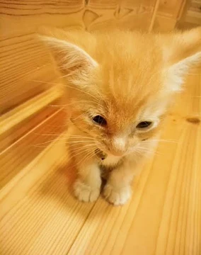
こんにちは。富山で自然素材にこだわるホンモノの家、フジ創アイノスです。 今日は２０２２年２月２２日。２（にゃん）が６つもある「スーパー猫の日」だそうです。 アイノスの家に引っ越してから１年後にやってきた我が家の猫も、すっ
続きを読む →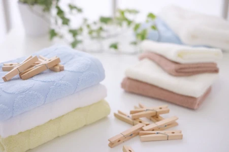
こんにちは。富山で自然素材にこだわるホンモノの家、フジ創アイノスです。 中庭のある家のメリット 中庭のある家では、毎日の洗濯が楽になります！ まず、洗濯機がある脱衣室が中庭に面していると、脱衣室から数歩で洗濯物を干すこと
続きを読む →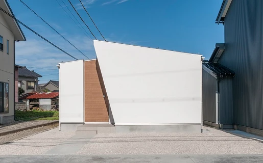
こんにちは。富山で自然素材にこだわるホンモノの家、フジ創アイノスです。 お風呂場に置く椅子の真ん中には、なぜ穴が空いているのかご存じですか？ 真ん中に穴を開けることで、上からかかる荷重をうまく分散させて、強度を増している
続きを読む →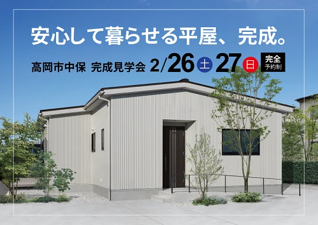
こんにちは。富山で自然素材にこだわるホンモノの家、フジ創アイノスです。 2月26日（土）27日（日）の2日間、 高岡市中保に完成した「平屋の家」完成見学会を開催します。 【見どころ】 ■シンプルで快適な暮らしを実現した平
続きを読む →
こんにちは。富山で自然素材にこだわるホンモノの家、フジ創アイノスです。 ▼坪単価が安い家は、結局高い買い物となる 坪単価が安い家とは、言い換えるなら面積が大きい家です。 そして、家の面積が大きくなるということは、結局家の
続きを読む →こんにちは。富山で自然素材にこだわるホンモノの家、フジ創アイノスです。 「リビングは広ければ広いほどいい」 「収納もたくさんほしい」 「念のため和室もつくっておきたいし、時にはゆっくり1人でこもれる書斎も欲しい」 「寝室
続きを読む →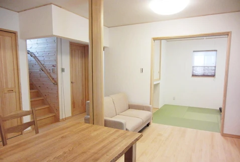
こんにちは。富山で自然素材にこだわるホンモノの家、フジ創アイノスです。 フジ創アイノスの家づくりは、お客様のご希望に合わせた３つのスタイルを提案しています。 もちろん、どれもこだわりの自然素材で作っています。 まずは、自
続きを読む →